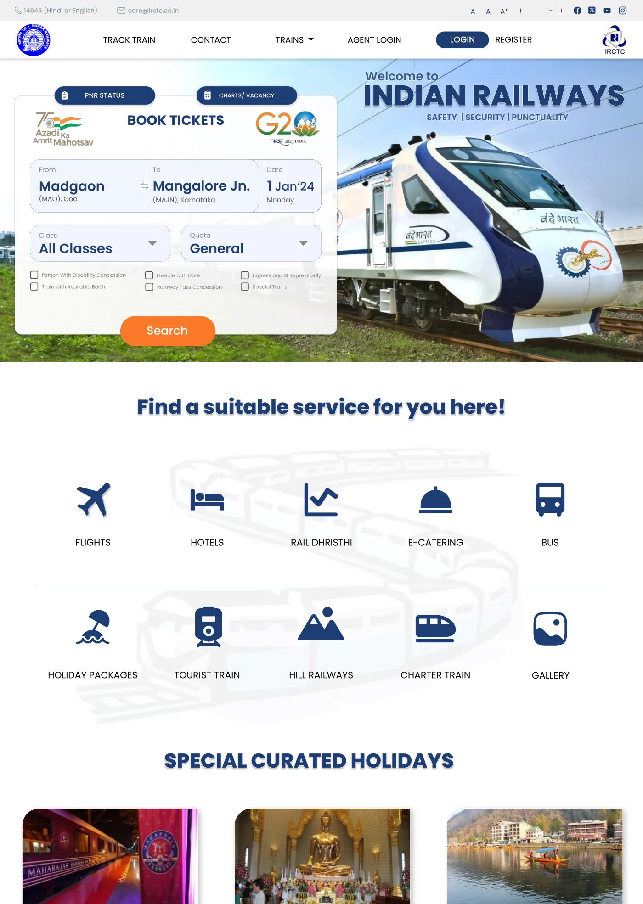

IRCTCDesign study · 4 min read
The train search comes first.
An independent homepage concept exploring the hierarchy between a primary booking task and a large set of secondary services.
Read the case study
The concept makes the booking form the visual centre while retaining adjacent rail tasks.
View full size ↗01 The problem
How should a dense service homepage protect its primary task?
A railway homepage serves many audiences, but searching for a train is a clear primary task. My independent IRCTC concept places the booking form prominently while retaining entry points for PNR status, vacancies, concessions, and related travel services. The challenge is hierarchy: helping the common task stay visible without erasing important exceptions.
Designed for Traveller starting a rail search. Start a train search without losing the primary task.
User context Design assumption
Arriving with a route and a possible date in mind.
- The friction
- Many services and promotions compete for attention.
- Design implication
- Give journey inputs first priority.
Example situation · illustrative scenario. Picture arriving at a railway homepage with a route and a date in mind. Other services matter, but the immediate task is to form a complete train search.
02 Research & direction
The task worth protecting
The concept gives the search one recognisable task area, while retaining adjacent rail services and placing trip inspiration further down.
Independent homepage concept
- Search-first
- page hierarchy
- 5
- core journey inputs
- Concept
- homepage scope
My direction. I focused the redesign on hierarchy: group the journey inputs, preserve useful shortcuts, and make the difference between booking and browsing legible.
More about the original process
The source is one full homepage design, not a documented end-to-end booking redesign. I evaluated the visible grouping of From, To, Date, Class, and Quota, the surrounding service links, and the separation of holiday content below the search area.
There is no original usability study or live implementation in the provided material. Dates, phone numbers, and offers in the mockup are sample or historical interface content, not current travel guidance.
- Form the query
Keep route, date, class, and quota together.
- Search
Give the completed query one clear action.
- Continue
Carry the task into results and recovery states next.
03 Design decisions
Keep train booking at the centre.
Open a decision to see the reasoning and trade-off.
01Keep the core journey fields together
The concept groups origin, destination, travel date, class, and quota in a single booking panel with a visible Search action.
Why this matters. The person can form a complete query in one recognisable task area.
The trade-off. The retained panel still contains many specialised options. Today I would test how to reveal less common settings without hiding essential access needs.
02Distinguish a current journey from trip inspiration
Related services and curated holidays appear beneath the primary search region.
Why this matters. A person trying to book a known route should not have to read promotional content first.
The trade-off. The holiday cards remain text-heavy. Visual separation helps hierarchy but does not by itself solve page density.
03Retain explicit entry points for adjacent rail tasks
PNR status and chart/vacancy shortcuts remain accessible near the booking area.
Why this matters. People returning to manage an existing journey have a different task from people searching for a new one.
The trade-off. The homepage only establishes entry points. It does not demonstrate those destination flows or their error handling.
04 The outcome
Search leads. Other services follow.
I created an independent homepage concept with a clear train-search area and grouped entry points for secondary rail services. The work concentrates on the starting task. Search results, changing availability and the rest of the booking flow were not part of this concept.
More about the experience
- A central task area. The booking panel groups the core journey inputs.
- Adjacent rail tasks. PNR and vacancy entry points remain nearby.
05 Reflection
Hierarchy should make the common task clear without erasing important exceptions.
I would take the same hierarchy into a difficult journey: no seats available, a changed fare or an unsuitable route. A quieter homepage only helps if the following screens make those decisions understandable too.
What I would evaluate next proposed work
- find a train, check an existing journey, and locate a concession option; compare discovery and mistakes without assuming that a shorter visual scan means a successful booking.
- add no-results, changing availability, route correction, keyboard navigation, and narrow-screen form states.
A photography site that leaves room for the photographs.